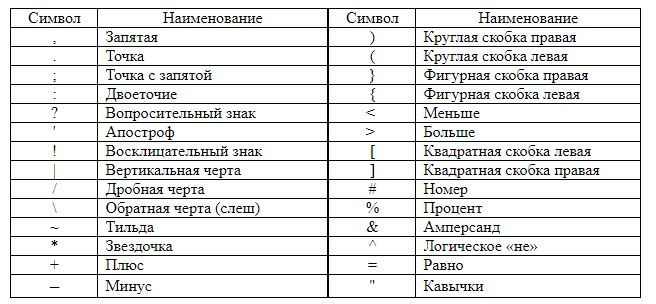
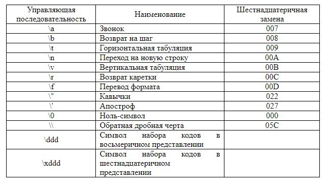
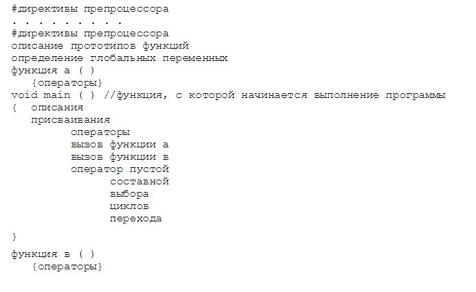

Edward & Albert / github:Tgjmjgj
C++ — компилируемый, статически типизированный язык программирования общего назначения.Поддерживает такие парадигмы программирования, как процедурное программирование, объектно-ориентированное программирование, обобщённое программирование.
Программа на С++ состоит из одного или нескольких файлов. С логической точки зрения файл транслируется за несколько проходов. Первый проход состоит в препроцессорной обработке, на которой происходит включение файлов и макроподстановка. Работа препроцессора управляется с помощью команд, являющихся строками, первый символ которых отличный от пробела есть #. Результат работы препроцессора – это последовательность лексем, которую называют единицей трансляции.
Существуют лексемы пяти видов:
| Прописные буквы латинского алфавита | A B C D E F G H I J K L M N O P Q R S T U V W X Y Z |
| Строчные буквы латинского алфавита | a b c d e f g h i j k l m n o p q r s r u v w x y z |
| Символ подчеркивания | _ |
| Прописные буквы русского алфавита | А Б В Г Д Е Ж З И К Л М Н О П Р С Т У Ф Х Ц Ч Ш Щ Ъ Ы Ь Э Ю Я |
| Строчные буквы русского алфавита | а б в г д е ж з и к л м н о п р с т у ф х ц ч ш щ ъ ы ь э ю я |
| Арабские цифры | 0 1 2 3 4 5 6 7 8 9 |
Они используются для организации процесса вычислений и для передачи компилятору определенного набора инструкций.
Управляющая последовательность строится на основе использования обратной дробной черты (\) (обязательный первый символ) и комбинации латинских букв и цифр.
Идентификатор – это последовательность букв и цифр произвольной длины. Первый символ должен быть буквой (символ подчеркивания _ считается буквой). Прописные и строчные буквы различаются. Все символы существенны. Например, два идентификатора, для образования которых используются совпадающие строчные и прописные буквы, считаются различными: abc и ABC, A128B и a128b.Идентификатор создается на этапе объявления переменной, функции, структуры и т.п. после этого его можно использовать в последующих операторах разрабатываемой программы. Идентификатор не должен совпадать с ключевыми словами, с зарезервированными словами и именами функций библиотеки компилятора языка С/C++.
Программа оперирует информацией, представленной в виде различных объектов и величин. С точки зрения архитектуры компьютера, переменная – это символическое обозначение ячейки оперативной памяти программы, в которой хранятся данные. Доступ к значению возможен через имя переменной, а доступ к участку памяти – по его адресу. Каждая переменная перед использованием в программе должна быть объявлена, т.е. ей должна быть выделена память.
Размер участка памяти, выделяемой для переменной, и интерпретация содержимого зависят от типа, указанного в определении переменной. Тип переменной изменить нельзя. Простейшая форма объявления переменных:
тип_данных имя_переменной; //объявление переменной
тип_данных имя_переменной = значение; //объявление вместе с инициализацией
Тип переменной указывает компилятору языка C++, сколько памяти надо выделить для размещения объекта. Кроме того, он указывает компилятору каким образом надо интерпретировать значение, содержащееся в объекте.В С++ выделяют следующие категории типов:
Производные типы определяются на основе базовых и делятся на скалярные (перечисления, указатели и ссылки) и структурные (массивы, структуры, объединения и классы).
Кроме перечисленных, к основным типам языка относится тип void, но множество значений этого типа пусто. Он используется для определения функций, которые не возвращают значения, для указания пустого списка аргументов функции, как базовый тип указателей и в операции приведения типов.
Константы, в отличие от переменных, являются фиксированными значениями, которые можно вводить и использовать на языках С/С++.Разделяют четыре типа констант:
Целые константы не имеют дробной части и не содержат десятичной точки. Они представляют целую величину в одной из следующих форм: десятичной, восьмеричной или шестнадцатеричной.
| Десятичная константа | Восьмеричная константа | Шестнадцатеричная константа |
| 16 | 020 | 0x10 |
| 127 | 0117 | 0x2B |
| 240 | 0360 | 0xF0 |
Константа с плавающей точкой – десятичное число, представленное в виде действительной величины с десятичной точкой или экспонентой. Формат имеет вид:
[ цифры ].[ цифры ] [ E [+|-] цифры ]
Число с плавающей точкой состоит из целой и дробные части и (или) экспоненты. Константы с плавающей точкой представляют положительные величины удвоенной точности (имеют тип double). Для определения отрицательной величины необходимо сформировать константное выражение, состоящее из знака минуса и положительной константы: 115.75, 1.5Е-2, -0.025, .075, -0.85Е2
Символьные константы можно разделить на две группы:
Символьная константа в языках С/С++ состоит либо из одного печатного символа, заключенного в апострофы (' ', 'Q'), либо специального и управляющего кода, заключенного в апострофы ('\n', '\\').
Символьная константа рассматривается как символьный беззнаковый тип данных с диапазоном значений от 0 до 255. Часто используется константа '\0', которая называется нулевым символом или нулевым байтом.
Символьная константа, которой непосредственно предшествует буква L, является широкой символьной константой, например, L'ab'. Такие константы имеют тип wchar_t - двухбайтовый символьный тип.
Строковая константа (литерал) – последовательность из нуля или более символов, заключенная в кавычки (""): "город Тамбов", "YZPT КОД\72". Для запоминания строковых констант используется по одному байту на каждый символ строки и автоматически добавляется к ней признак конца строки, которым служит нулевой байт '\0'. Нулевой байт является ограничителем строки.
Ключевое слово const – модификатор типа, указывающий, что переменная является константой. Описание констант начинается с ключевого слова const, далее указывается тип и значение:
const int two = 2;
Таким именованным константам нельзя присваивать значения, а также нельзя объявлять без инициализации.
Комментарий – это набор символов, которые игнорируются компилятором. Введение комментария начинается с символов /* и заканчивается символами */. Все, что помещено между ними, игнорируется:
/* Это у нас
такой
многострочный
комментарий */
Доступны также и однострочные комментарии. В С++ используется пара символов //, указывающая начало строки комментария. В этом случае концом комментария считается конец строки, так что нет необходимости отмечать его специальным символом:
// комментарий на одну строчку
В дополнение к имени и типу объекта существуют еще два атрибута: область действия и время жизни объекта. Эти характеристики взаимосвязаны и существенно влияют на возможности использования переменной в программе.
Областью действия объекта (данного) называется та часть программы, в которой можно пользоваться этим объектом. В частности, областью действия может быть:
Временем жизни объекта называется отрезок времени, в течение которого значение этого данного доступно в некоторой части программы. Бывает локальное (при выполнении блока, в котором она объявлена) и глобальное (при выполнении всей программы) время жизни.
Пространство имен (namespace) – это механизм, предназначенный для предотвращения проблем, связанных с дублированием имен. Определенное множество имен вроде имен стандартной библиотеки ассоциируется с общим именем, которое и представляет собой пространство имен. Все средства стандартной библиотеки C++ определены внутри пространства имен по имени std, поэтому каждый элемент стандартной библиотеки имеет свое собственное имя плюс наименование пространства имен – std – в качестве квалификатора.
Применение полных имен в программе делает код громоздким, поэтому можно использовать объявление using, сообщающее компилятору о намерении использовать имена из пространства имен std без указания наименования пространства имен: using std::cout; using std::endl;.
Кроме того, в программе может быть использована глобальная директитва директива using:
using namespace std;
Директивы препроцессора представляют собой инструкции, записанные в исходном тексте программы и предназначенные для выполнения препроцессором языка. Директивы начинаются со специального знака #, помещаемого в первой позиции строки.Директивы позволяют:
Заголовочные файлы включаются в текст программы с помощью директивы препроцессора #include. Директива применяется для включения копии указанного в директиве файла в то место, где находится эта директива.
Для предотваращения дублирования подключения заголовочных файлов применяется директива #pragma once
Имя файла может быть указано двумя способами:
Различие между ними заключается в методе поиска препроцессором включаемого файла. Если имя файла заключено в угловые скобки (< >), считается, что используется стандартный библиотечный заголовок, и компилятор ищет этот файл в системных директориях. Двойные кавычки означают, что заголовочный файл – пользовательский, и его поиск начинается с того каталога, где находится исходный текст проекта. Заголовочные файлы содержат объявления и определения (классов, структур, объединений, перечисляемых типов и прототипов функций), общие для различных программных файлов, и поэтому часто создаются и включаются в файлы программ.
Директива препроцессора #define обычно используется для замены часто используемых в программе констант, ключевых слов, операторов и выражений осмысленными идентификаторами. Идентификаторы, которые заменяют числовые или текстовые константы либо произвольную последовательность символов, называются именованными константами. Идентификаторы, которые представляют некоторую последовательность действий, заданную операторами или выражениями языка, называются макроопределениями.
Формат директивы определяется как:
#define идентификатор строка_текста
Определения символических констант и макросов могут быть аннулированы при помощи директивы #undef.
#define TRI 3
#define F 5
#undef TRI // TRI теперь не определен
#define F 10 // F переопределен как 10
Макрос assert, определенный в заголовочном файле <cassert>, выполняет проверку значения выражения. Если значение выражения 0 (ложь), то макрос assert выводит сообщение об ошибке и вызывает функцию abort (из библиотеки утилит общего назначения <cstdlib>), которая завершает выполнение программы. Макрос удобно использовать при отладке. Например, переменная x в программе не должна принимать значение большее, чем 10. В этом случае макрос assert можно использовать для проверки значения x и вывода сообщения об ошибке, если значение i вышло из допустимого диапазона:
assert (x <= 10);
Если х будет иметь значение, большее, чем 10, то программа выдаст сообщение об ошибке, содержащее номер строки и имя файла, после чего завершит свою работу.Для отключения всех макросов assert в проекте достаточно в начале программы добавать строку
#define NDEBUG
В Microsoft Visual Studio разрабатываемая программа представена проектом. Проект - логический контейнер всех элементов приложения. Проекты (программы) можно объединять в одно решение - комплекс программ, как правило, предназначенных для совместной работы или общей разработки.
Программа на С++ представляет собой совокупность следующих файлов:
Заголовочные файлы хранят в себе краткое описание функций, реализуемых в исполняемых файлах, имена глобальных структур и объектов. Исполняемые файлы обычно содержат одну или несколько функций. Функция состоит из операторов языка.
Термин «функция» в языках С/С++ – охватывает понятия «подпрограмма», «процедура» и «функция», используемые в других языках программирования. С/С++-программа может содержать одну функцию (главная функция main) или любое количество функций. Фактически все программы на ISO/ANSI С++ начинаются главной функции main. Microsoft также называет эту функцию wmain, когда применяется кодировка символов Unicode, и имя _tmain определено либо как main, либо как wmain. Другие функции могут быть вызваны из функции main или из какой-либо другой функции в процессе выполнения программы. Эти функции могут находиться в том же модуле (файле), что и функция main, или в других модулях.
Главная функция может выглядеть следующим образом:
void tmain() { ... }
int _tmain(int argc, char* argv[]) { ... }
В общем случае программа на С/C++ имеет следующую структуру:
1. Сначала программа передается препроцессору, который выполняет директивы, содержащиеся в ее тексте (например, включение в текст так называемых заголовочных файлов — текстовых файлов, в которых содержатся описания используемых в программе элементов).
2. Получившийся полный текст программы поступает на вход компилятора, который выделяет лексемы, а затем на основе грамматики языка распознает выражения и операторы, построенные из этих лексем. При этом компилятор выявляет синтаксические ошибки и в случае их отсутствия строит объектный модуль.
3. Компоновщик, или редактор связей, формирует исполняемый модуль программы, подключая к объектному модулю другие объектные модули, в том числе содержащие функции библиотек. Если программа состоит из нескольких исходных файлов, они компилируются по отдельности и объединяются на этапе компоновки. Исполняемый модуль имеет расширение .ехе и запускается на выполнение обычным образом.